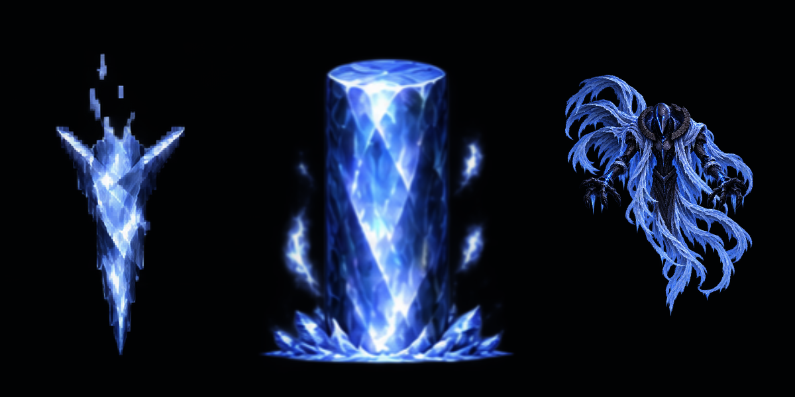

<!doctype html><html lang="ko"><meta charset="utf-8"><meta name="viewport" content="width=device-width,initial-scale=1"><title>AirBoss 얼음 원기둥 v03</title>
<style>body{margin:0;background:#101621;color:#e4edff;font:16px system-ui,sans-serif}main{max-width:1200px;margin:32px auto;padding:0 20px}h1{font-size:25px;margin-bottom:8px}p{color:#afbed3;line-height:1.6}.labels{display:grid;grid-template-columns:repeat(3,1fr);text-align:center;margin:25px 0 8px;font-weight:600}.labels span:nth-child(2){color:#b5d4ff}img{display:block;width:100%;background:#000;border-radius:12px}nav{display:flex;gap:16px;align-items:center;flex-wrap:wrap;margin:18px 0}button{background:#d5e5ff;color:#10213b;border:0;border-radius:8px;padding:10px 22px;font:inherit;cursor:pointer}input{flex:1;min-width:180px;accent-color:#94c0ff}small{display:block;margin-top:18px;color:#8fa2bd;line-height:1.6}.timing{display:flex;height:8px;gap:3px}.timing i{border-radius:4px}.rise{flex:1;background:#617fbd}.hold{flex:3;background:#c9deff}.break{flex:1;background:#6888ca}output{min-width:180px}</style>
<main><h1>AirBoss 얼음 원기둥 · v03</h1><p>24장의 새 그림 · 중앙 피봇 · 상승 0.5초 → 완성 상태 1.5초 유지 → 파괴 0.5초</p><div class="labels"><span>승인된 고드름</span><span>새 얼음 원기둥</span><span>AirBoss 참조</span></div><nav><button id="toggle">일시 정지</button><button id="again">처음부터</button><input id="seek" type="range" min="0" max="2.5416667" step="0.001" value="0" aria-label="재생 시각"><output id="label"></output></nav><div class="timing"><i class="rise"></i><i class="hold"></i><i class="break"></i></div><small>Unity 클립의 실제 키 시각에 맞춘 미리보기입니다. 이 페이지에서 반복 감상할 수 있으며, 제작한 Unity 클립은 한 번 재생합니다. 마지막에는 원기둥이 완전히 지워집니다. 보스 높이는 화풍 비교를 위해 맞췄습니다.</small></main>
<script>const ticks=[0,1,2,4,6,8,10,11,12,18,24,30,36,42,48,49,50,51,52,53,54,55,56,58,60],end=61/24;const imgs=ticks.map((_,i)=>{const im=new Image;im.src=`PreviewFrames/Frame_${String(i+1).padStart(2,'0')}.png`;return im});const image=document.querySelector('#frame'),seek=document.querySelector('#seek'),label=document.querySelector('#label'),toggle=document.querySelector('#toggle');let playing=true,time=0,base=performance.now(),last=-1;function show(t){time=t;let index=0;while(index<24&&ticks[index+1]/24<=t)index++;if(index!==last){image.src=imgs[index].src;last=index}seek.value=t;const phase=t<.5?'상승':t<2?'유지':t<2.5?'파괴':'종료';label.value=`${t.toFixed(2)}초 · ${phase} · ${index<24?String(index+1).padStart(2,'0')+'/24':'빈 화면'}`}toggle.onclick=()=>{playing=!playing;base=performance.now()-time*1000;toggle.textContent=playing?'일시 정지':'재생'};document.querySelector('#again').onclick=()=>{base=performance.now();playing=true;toggle.textContent='일시 정지';show(0)};seek.oninput=()=>{playing=false;toggle.textContent='재생';show(Number(seek.value))};function tick(now){if(playing){const elapsed=(now-base)/1000%(end+.65);show(Math.min(elapsed,end))}requestAnimationFrame(tick)}requestAnimationFrame(tick);</script></html>
